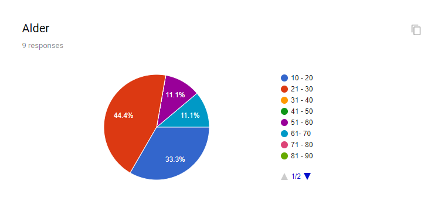
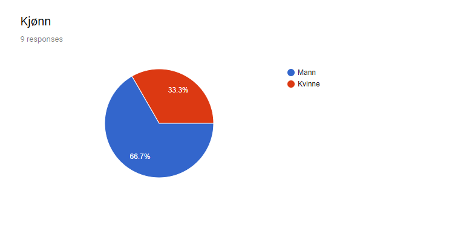
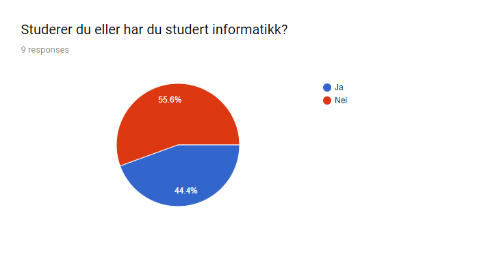

Client contact: Gradon Ramsey, owner of Hall’s Kitchen
We asked our testers to use our website for a little while (ca. 5-10 minutes). Then asked them fill out our questionnaire. This includes basic information about the user (age, gender, experience), as well as questions about the design, functionality, usability and navigation. We asked the users to rate certain features/qualities regarding the different categories, and if they had any additional comments or concerns. We made this into a google form and sent it to the tester, as well as observing some of them.
Here is the link to the google form
(Note: The form is in norwegian as we saw it more appropriate for the tester audience as they were all norwegian).
We tried to get a variety of testers, from both young and old, and people with and without programming experience. However, it was challenging to get enough tests, especially in the older ranges. Though, we feel that we got enough tests to get a sense of how the web site stood up and to address some core issues.
The following diagrams shows the composition of the tester audience.
  We got some to test on mobile, something that was useful as most of our comments were directed towards issues on mobile. We assumed that everyone was using a standard updated browser like google chrome, firefox or safari as this is the norm.
There wasn't any concrete criticism or comment because it can be hard to articulate design as it can be subjective. Therefore, it can be hard to know anything specific to change. However, we are also happy enough with the result.
Some commented that there could be information about delivery. We decided that it should be included at the payment-step in the process of ordering, and as this is outside the scope of the project, we made the decision not to include it.
Another comment was they felt it lacked more specific details for dishes, for example calories etc. This is something we could add if it this was a more professional project, but felt it wasn't necessary in this project.
Here we are very satisfied with the grading. Some commented that the buttons on mobile could possibly be too small. “Buttons for clicking image in menu is too small, and maybe should have been whole image”. This is something we have thought about, but we feel that it is more clear for the user if it says “More” with a button, especially users that are not used to have images work as something you can click on (older people for instance).
These (including usability) got one hundred percent satisfaction, as well as no comments. Therefore, we have concluded that our design was intuitive to use and that the functionality was complete for our purposes.
The feedback we got indicated that the only issues users had with the site was in regards to the mobile version. What we learned is that if we were to further develop this site, we would work on optimizing the experience on mobile devices.
Other than that we feel that most of the core functional and non-functional requirements that we specified from earlier was largely confirmed through the tests. This includes that a user should be able to order food, viewing menu items as photos, find location of the restaurant and that the site in general should be easy to use and navigate for the user. This is especially confirmed by how good the grading were for usability, navigation and functionality.
Overall, we think that the project went well, but of course there were some things that we think could be done differently. In this short reflection we are going to go over what we learnt, both things that we felt we did well and also things that might have done differently next time.
A thing that we felt that went well was meeting and planning the project in general. We mostly met 1 time each week, and assigned the work to each team member so that we could work on our own, and then come together and update each member of what we did. We also had a time schedule on when things should be done. This was a useful way to work because we could spend most time doing the actual work, but at the same time be on the same page. If there were something specific we were unsure about, we just asked in our chat and resolved it quickly.
Using git have also been really useful, but at the same time it has made it more difficult for some in the group because they had to spend time learning it for the first time. However, the more time we spent using it the better it got, and the more we realized how useful git was. For example if people are working on different things in parallel it makes things easier to merge together the work.
A possible mistake we did was maybe that we tried to think too much outside of the box to make something that was in the gray area of being outside the scope of the course. More specifically, trying to use persistence (JSON files) in our site to have menu selection and make it remember it in the cart. We were able to pull it off with a compromise (using localStorage), with being inside the scope of the course, and we think it went really well in the end, but it might have been risky. If we found out that we wouldn't be able to do it, then we could have wasted a lot of time and energy, and the final result of the project would have possibly become worse. In the future, this is something that we have to think of early on and make the appropriate compromises if possible. However, in the end we felt we made a good compromise and it worked out well.
In the end, we feel that we have learned a lot from the project, especially about how to do programming group projects in general. This includes using git, meeting, making schedules, and how to make compromises. This is something that we will take with us in future programming projects.
Final location: FOLK.NTNU